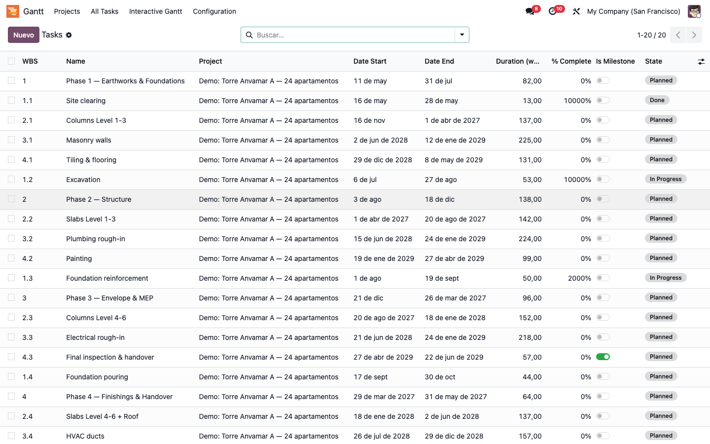
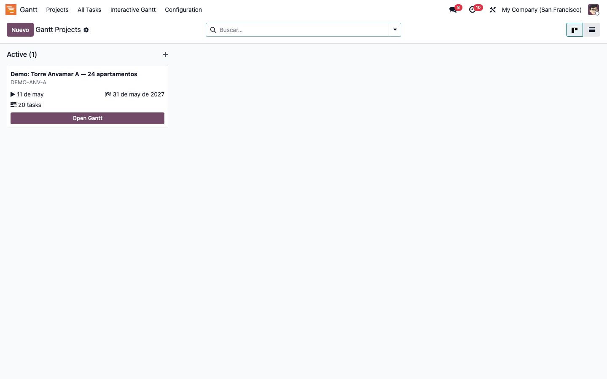
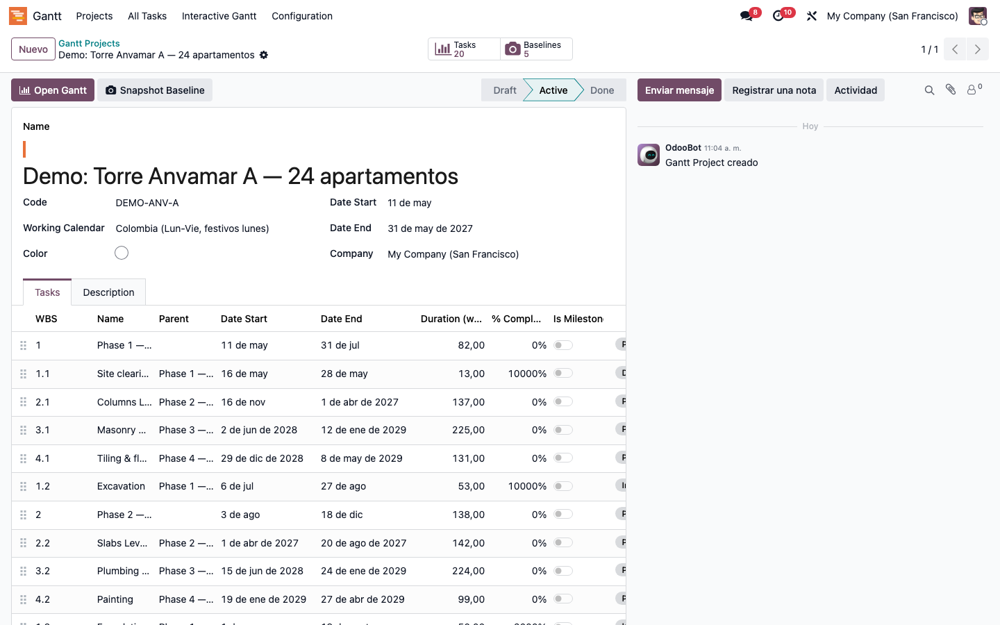
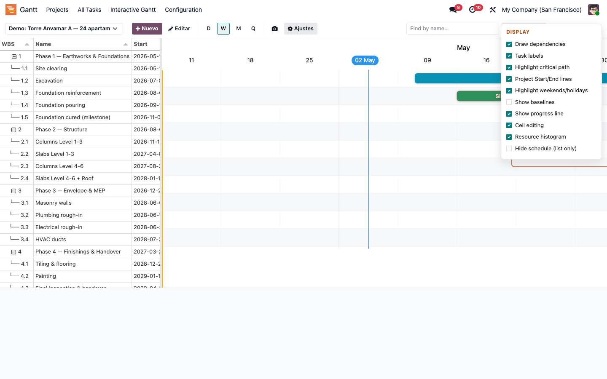
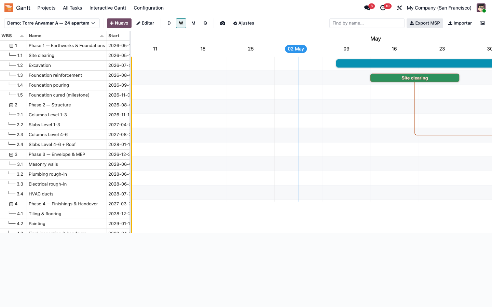
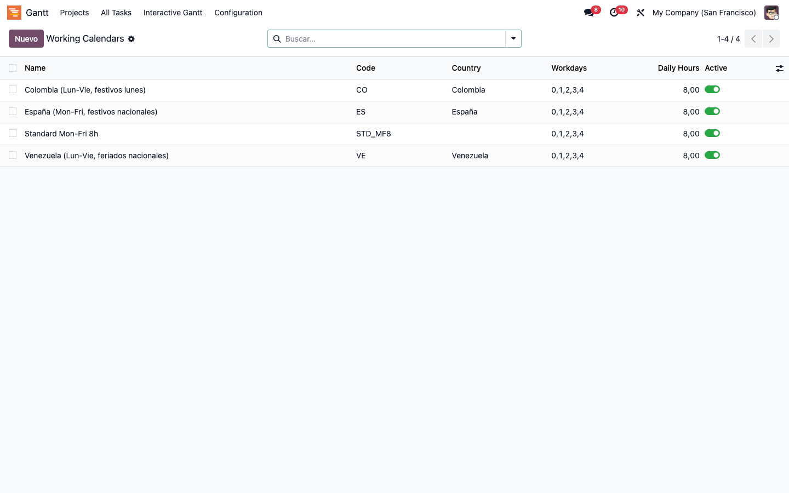
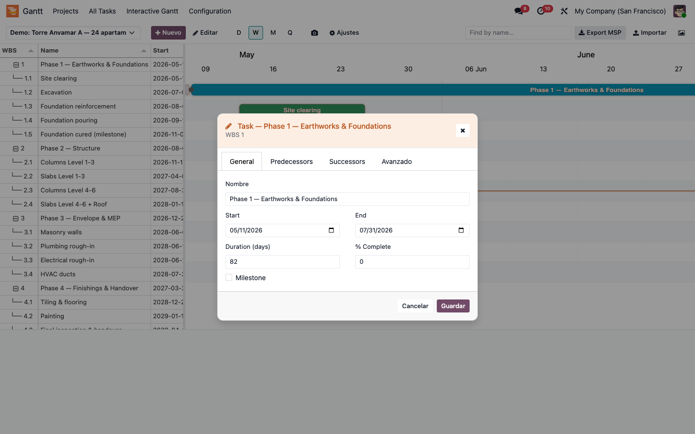

MI ERP Gantt Open-Source Pro — Odoo 19
Modern Gantt engine with Critical Path, Baselines and Auto-scheduling — free & open-source (LGPL-3)
Description
MI ERP Gantt Open-Source Pro is a standalone, generic Gantt chart engine for Odoo 19, suitable for any module that needs to schedule activities — construction works, software projects, event planning, manufacturing campaigns. It ships a custom Critical Path Method (forward + backward pass) computed client-side, four dependency types (FS / SS / FF / SF) with lag and lead in working days, multi-baseline overlays, auto-scheduling of successors and a resource allocation histogram.
Round-trips schedules with Microsoft Project via the MSPDI XML format (2019+), captures PNG snapshots in one click and renders with rounded bars, amber project markers and red critical-path highlight in the MI ERP palette. Designed to be extended — sibling bridges connect it to BIM/IFC viewers, construction APUs and field-foreman PWAs.
Product screenshots
Real screenshots from the module running on Odoo 19 with seeded data, captured by the Playwright audit suite.

Gantt with Critical Path
Forward + backward pass computed client-side: every task on the critical path turns red. Rounded bars, DHTMLX-style header bands, amber project markers, FS/SS/FF/SF dependency arrows with lag/lead. Drag a bar — every successor reschedules respecting the working calendar.

WBS sidebar (Tabulator)
Hierarchical sidebar with WBS, name, start, duration and resources powered by Tabulator. In-cell editing, expand/collapse of summary tasks, multi-level indentation and a synchronized scroll with the chart.

Multi-project selector
List view of every Gantt project, with progress %, start/end and active calendar — switch contexts in one click.

Project form
Project header with calendar, baselines, currency and zoom level. Open the Gantt straight from the smart-button.

Settings dropdown
Ten Bryntum-style toggles: critical path, baselines, project lines, non-working highlight, cell editing, progress line, rollups, list-only mode…

Resource histogram (ECharts)
Stacked-bar chart of effective resource hours per day. Spot over-allocations at a glance and re-balance by dragging tasks.

Working calendars
Pre-loaded calendars for Spain, Colombia and Venezuela. Define your own with workdays + holidays — the auto-scheduler honours them.

Task editor popup
Inline editor with start, duration, % progress, predecessors, lag/lead and resources — no full reload between edits.
Core features
Critical Path Method
- Forward + backward pass in pure JS
- Critical bars highlighted in red
- Total float / free float per task
- Recalculated on every drag
Multi-Baseline overlay
- Snapshot the schedule any time
- Ghost-bar overlay vs current
- Compare planned vs actual
- Toggle individual baselines on/off
Dependencies & auto-schedule
- Four types: FS · SS · FF · SF
- Lag / lead in working days
- Successors reschedule on drag
- Working-calendar aware
Working calendars
- Spain, Colombia, Venezuela built-in
- Custom workdays + holidays
- Non-working highlight on the chart
- Per-project active calendar
MSPDI XML round-trip
- Export to MS Project 2019+ format
- Import back from
.xml - Tasks, dependencies, calendars
- No format loss between trips
Resource histogram
- Stacked-bar per day (ECharts)
- Effective resource hours
- Over-allocation detection
- Click-through to the task
Settings dropdown
- 10 Bryntum-style toggles
- Critical path, baselines, rollups…
- Progress line and list-only mode
- Per-user preferences
PNG snapshot
- One-click capture (html2canvas)
- Full Gantt as PNG
- Ready for status reports / emails
- Zoom day / week / month / quarter
Built to be extended
- Inherit
mierp.gantt.task - Inherit
mierp.gantt.project - BIM/IFC bridge via
mierp_construction_gantt - Mobile foreman PWA via
mierp_bim_fm
Why we are better than the paid alternatives
Presto and most construction ERPs depend on external Microsoft Project for the schedule, or embed the commercial Bryntum component. We bring the engine inside Odoo with zero runtime fees — vendored, audited and owned by you.
| Aspect | Bryntum (paid) | MS Project (paid) | MI ERP Gantt Pro |
|---|---|---|---|
| Licensing model | USD 940 / dev / year | USD 10 / user / month | FREE · LGPL-3 |
| Critical Path | ✓ | ✓ | ✓ (custom JS, no black box) |
| Multi-baselines | ✓ | ✓ | ✓ |
| Auto-scheduling (FS/SS/FF/SF) | ✓ | ✓ | ✓ |
| MS Project XML round-trip | ✓ | native | ✓ (MSPDI 2019+) |
| Native Odoo 19 integration | — | — | ✓ |
| Resource histogram | ✓ | ✓ | ✓ (ECharts) |
| BIM / IFC bridge (xeokit) | — | — | ✓ via mierp_construction_gantt |
| Mobile foreman PWA | — | — | ✓ via mierp_bim_fm |
| Code ownership | obfuscated | closed | full source vendored |
Companion modules (extend & conquer)
mierp_gantt stays domain-agnostic — every vertical adds its own
bridge by inheriting mierp.gantt.task and
mierp.gantt.project. None of these are required to use the Gantt
on its own.
Construction
mierp_construction_gantt
- Work ↔ project
- APU concept ↔ task
- Stage ↔ summary
- IFC element ↔ task (4D)
BIM / 4D / 5D
mierp_bim_4d_5d
- xeokit IFC viewer in-task
- Time-lapse 4D animation
- Cost overlay 5D
- Critical-path highlight in 3D
Field Manager
mierp_bim_fm
- Mobile foreman PWA
- Daily progress capture
- Photo + GPS evidence
- Offline-first sync
Typical workflow
Plan
- Create the Gantt project, pick a working calendar (CO / VE / ES or custom).
- Add tasks manually, paste from clipboard, or import from MS Project XML.
- Link tasks with FS / SS / FF / SF dependencies and lag / lead in working days.
- Snapshot the initial baseline so you can compare planned vs actual later.
Execute
- Drag a bar — every successor auto-reschedules honouring the calendar.
- Watch the critical path turn red live as the schedule moves.
- Capture % progress in the task editor or the WBS sidebar (in-cell editing).
- Review resource histograms to spot and resolve over-allocations.
Report
- Toggle baseline overlay to compare planned vs actual.
- Export back to MSPDI XML for stakeholders running MS Project.
- Capture a PNG snapshot for status emails and weekly reports.
- Enable bridges (construction, BIM, FM) to add domain context as needed.
Technical details
- Main models:
mierp.gantt.project,mierp.gantt.task,mierp.gantt.dependency,mierp.gantt.calendar,mierp.gantt.baseline. - OWL 2 component shipped under
mierp_gantt/static/src/components/gantt_view. - Critical Path engine:
core/cpm.js— forward + backward pass with topological sort. - Auto-scheduler:
core/auto_scheduler.js— working-day arithmetic, FS/SS/FF/SF + lag/lead. - MSPDI export:
core/mspdi_export.js; import wizard parses the same format. - BIM / IFC bridge hook:
widgets/ifc_bridge.js— picked up bymierp_construction_gantt. - Compatible with Odoo Enterprise and Community.
- Depends on:
base,mail,web.
Vendored libraries (no CDN)
| Component | Library | License | Vendored size |
|---|---|---|---|
| Render engine | Frappe Gantt v0.9 | MIT | 41 KB |
| Sidebar table | Tabulator v6.3 | MIT | 442 KB |
| PNG snapshot | html2canvas v1.4 | MIT | 199 KB |
| Resource histogram | Apache ECharts v5 | Apache 2.0 | shared |
Requirements
Odoo modules
- Base (base)
- Discuss (mail)
- Web (web)
Optional bridges
mierp_construction_gantt— work / APU / IFC bridgemierp_bim_4d_5d— 4D/5D viewermierp_bim_fm— field-foreman PWA
Browser
- Chrome 91+ / Firefox 89+ / Safari 15+ / Edge 91+
- Native ES Modules support
No external services
- All JS libraries vendored under
static/lib/ - No CDN, no telemetry, no phone-home
- Air-gapped installs supported


Contact us
You'll get free assistance for 60 days for any issue or error.
For inquiries or support: info@mi-erp.app
Pricing
- ✓ No per-developer fees
- ✓ No runtime royalties
- ✓ Multi-company, multi-currency
- ✓ Full source code (forkable)
- ✓ Community email support
Need the full suite?
MI ERP BIM Suite bundles the 5 core modules (Construction, BIM, Revit, 4D/5D, FM) plus the 2 Colombia localizations — Gantt included.
Available as a separate module: mierp_bim_suite.
Contact us at info@mi-erp.app.